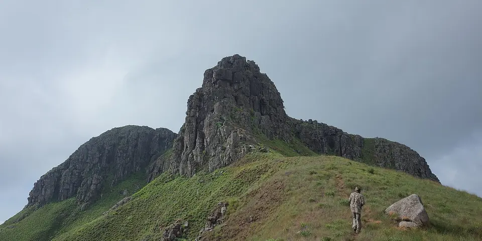

Sub-Saharan Africa
Sierra Leone on a budget
Sierra Leone has empty white beaches, the Tacugama chimp sanctuary and quiet islands like Banana Islands, a destination rebuilding steadily and still refreshingly uncrowded.
Photo: Rokaso, CC BY-SA 4.0, via Wikimedia Commons

Classic route
Freetown, the peninsula beaches, Banana Islands and Tiwai. 10 days.
Before you go
Flights to Freetown Peninsula: Skyscanner · Kiwi.com · Google Flights
Hostels and guesthouses in Freetown Peninsula · Banana Islands · Tiwai Island · River Number Two
Tours and tickets: Freetown Peninsula · Banana Islands
Mobile data: Sierra Leone eSIM
Travel insurance: SafetyWing
How much 10 places in Sierra Leone cost
Daily budgets per person in US dollars: a hostel dorm or simple guesthouse, local food, local transport and the usual entry fees.
-
Freetown Peninsula
Palm beaches like River No. 2 curve beside green hills, and rescued chimps live in the forest at the Tacugama sanctuary.
Bed $20 · Food $8 · Getting around $4 · Extras $5
Budget tip: Beach guesthouses often include meals. Shared taxis along the peninsula road are cheap, but leave early to beat Freetown's traffic.
$37per day -
Banana Islands
Quiet island coves with snorkeling, fishing villages and old colonial ruins, reached by a short boat ride from the peninsula.
Bed $20 · Food $8 · Getting around $8 · Extras $4
Budget tip: Boats leave from Kent village. Share the boat with other travelers and stay in a simple island guesthouse with meals.
$40per day -
Tiwai Island
Rainforest with 11 primate species and pygmy hippos, explored on guided walks and night canoe trips along the Moa River.
Bed $20 · Food $8 · Getting around $10 · Extras $15
Budget tip: A community-run project; stay overnight. Night walks and early mornings give the best chances of seeing wildlife.
$53per day -
River Number Two
A white-sand beach where a river meets the sea, below forested hills, with calm swimming and fresh lobster.
Bed $20 · Food $8 · Getting around $4 · Extras $3
Budget tip: An easy day trip from Freetown. The community runs the guesthouse and canoe trips, so your money stays local.
$35per day -
Bonthe
Faded colonial town on Sherbro Island with crumbling churches, fishing boats, quiet beaches and slow island life far from the mainland.
Bed $18 · Food $7 · Getting around $15 · Extras $3
Budget tip: Boats run from Mattru Jong or Yagoi; departure times depend on tides, so ask locally. Bring cash, as banking services are limited.
$43per day -
Bunce Island
The haunting ruins of a British slave fort on a small island in the Sierra Leone River.
Bed $20 · Food $8 · Getting around $15 · Extras $5
Budget tip: Share a boat from Freetown with other visitors to split the cost of the trip.
$48per day -
Outamba-Kilimi National Park
Remote northern park of savanna and forest along the Little Scarcies River, with hippos, elephants, chimpanzees and canoe trips.
Bed $18 · Food $8 · Getting around $15 · Extras $10
Budget tip: Transport is the main cost; share a hired car from Makeni or Kabala. Bring food supplies and confirm camp availability before setting off.
$51per day -
Mount Bintumani
West Africa's highest peak west of Mount Cameroon, a multi-day hike through grasslands and forest from Sinekoro village in the Loma Mountains.
Bed $15 · Food $7 · Getting around $15 · Extras $15
Budget tip: Arrange porters, guides and village permissions in Sinekoro, and carry cash in small notes. Go in the dry season between November and April.
$52per day -
Tacugama Chimpanzee Sanctuary
A sanctuary for rescued chimpanzees in the rainforest above Freetown, with guided tours and forest trails.
Bed $20 · Food $8 · Getting around $5 · Extras $20
Budget tip: Book the tour in advance. Its eco-lodges are a quiet alternative to staying in town.
$53per day -
Gola Rainforest National Park
Large lowland rainforest on the Liberian border, rich in pygmy hippos, forest elephants, picathartes birds and hundreds of butterfly species.
Bed $20 · Food $8 · Getting around $15 · Extras $20
Budget tip: Book through the park office in Kenema to arrange guides and lodging. Combining a visit with Tiwai Island cuts transport costs.
$63per day
Know before you go
Sierra Leone on a budget: the basics
Currency
$1 = 24.65 SLE
Sierra Leonean leone
| Dollars to SLE | SLE to dollars | ||
|---|---|---|---|
| $1 | 24.65 SLE | 10 SLE | $0.406 |
| $5 | 123 SLE | 50 SLE | $2.03 |
| $10 | 247 SLE | 100 SLE | $4.06 |
| $20 | 493 SLE | 500 SLE | $20.28 |
| $50 | 1,233 SLE | 1,000 SLE | $40.56 |
| $100 | 2,465 SLE | 5,000 SLE | $203 |
A typical day here (about $40) is roughly 990 SLE.
Mid-market rate on 2026-10-05. Cash machines and exchange desks pay a little less.
Getting around
Poda-podas (minibuses), shared taxis, kekes (tuk-tuks) and okadas (motorbikes) cover most trips, and fares are cheap if you ask locals first. From Lungi airport, a water taxi across the estuary to Freetown is the quickest option. Boats to the Banana Islands leave from Kent, and Tiwai is easiest with a hired driver or an arranged trip.
Where to sleep
Expect guesthouses in Freetown and beach huts or eco-lodges along the peninsula at places like River Number 2 and Tokeh. Banana Islands and Tiwai have basic community-run lodges and camping.
What to eat
- Cassava leaves: stewed greens with palm oil and meat or fish
- Groundnut soup: peanut stew served over rice
- Jollof rice: spiced tomato rice, a party favorite
- Poyo: fresh palm wine sold in villages
Money
Bring cash, ideally US dollars to change, since ATMs are limited and many reject foreign cards. The leone was redenominated in 2022, so check which notes you get; haggling is normal, and tips are welcome.
Phone data
Orange and Africell SIMs are cheap and need ID to register, and coverage is good around Freetown but thin in rural areas.
Heads up
Malaria is common year-round, so use prevention and sleep under a net.
Sierra Leone travel: quick answers
How much does a day in Sierra Leone cost on a budget?
About $40 a day for one person, from $35 in River Number Two to $63 in Gola Rainforest National Park. That covers a hostel dorm or simple guesthouse, local food, local transport and the usual entry fees, so a week runs about $280 before flights.
When is the best time to visit Sierra Leone?
November to April is the best time, with the most reliable weather for getting around.
What is the cheapest place to visit in Sierra Leone?
River Number Two, at about $35 a day. A white-sand beach where a river meets the sea, below forested hills, with calm swimming and fresh lobster.
How long do you need in Sierra Leone?
Freetown, the peninsula beaches, Banana Islands and Tiwai. 10 days.
How much is $1 in Sierra Leone?
One US dollar is about 24.65 Sierra Leonean leone (SLE), going by the mid-market rate on 2026-10-05. So $20 is roughly 493 SLE, and a typical budget day of $40 comes to about 990 SLE.
How do you get around Sierra Leone cheaply?
Poda-podas (minibuses), shared taxis, kekes (tuk-tuks) and okadas (motorbikes) cover most trips, and fares are cheap if you ask locals first. From Lungi airport, a water taxi across the estuary to Freetown is the quickest option. Boats to the Banana Islands leave from Kent, and Tiwai is easiest with a hired driver or an arranged trip.
What food should you try in Sierra Leone?
Cassava leaves, stewed greens with palm oil and meat or fish. Groundnut soup, peanut stew served over rice. Jollof rice, spiced tomato rice, a party favorite. Poyo, fresh palm wine sold in villages.
Planning around the seasons? See where to go in November, or compare the cheapest countries nearby.
Similar budgets nearby
- Côte d'Ivoire $42/day
- Kenya $37/day
- Uganda $37/day
- Eritrea $43/day